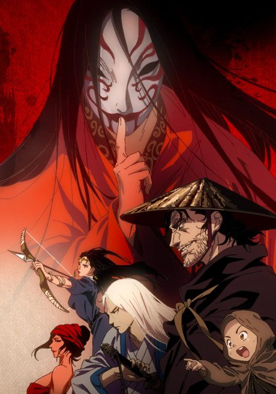

Biaoren
镖人
In the final years of China's Sui dynasty, a mysterious bodyguard takes dangerous escort jobs while the empire falls into chaos.
We haven't found where the anime ends in the manga yet.
7.3AniList score
—Animeter, no votes yet
23episodes, 2 seasons
Rate it or report where you stopped
Is it worth pushing through?
Built from what visitors report across all 2 seasons (23 episodes).
Loading reports…Checking what other people said about this one.
Sign in above with your email to add your report.
More like Biaoren
 Done8.1
Done8.1
 Manga Ch. 888.4
Manga Ch. 888.4
 Manga Ch. ?7.4
Manga Ch. ?7.4
 Film7.3
Film7.3
 Manga Ch. 1018.7
Manga Ch. 1018.7
 Manga Ch. 908.0
Manga Ch. 908.0
 Manga Ch. 1588.2
Manga Ch. 1588.2
 Done7.1
Done7.1
 Own end8.1
Own end8.1
 Film7.9
Film7.9
 Unclear7.7
Unclear7.7
 Manga Ch. 3408.9
Manga Ch. 3408.9